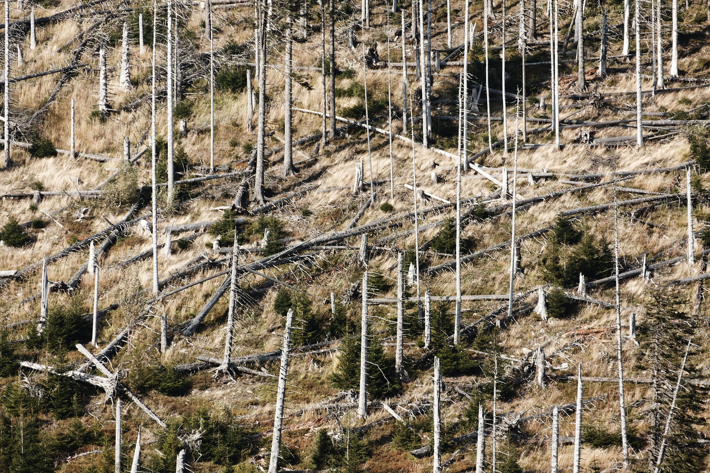

A globális felmelegedés hatásai és veszélyei
Földünknek van egy felmelegedési és lehűlési ciklusa, de ez több
ezer vagy több tízezer évet ölel fel. Az utóbbi néhány évtizedben
közel 1ºC-kal nőtt az átlaghőmérséklet. Ez túl gyors változás
ahhoz, hogy kizárólag a Föld saját ciklusainak tulajdoníthassuk. A
szakértők és tudósok szerint a vízválasztó a 2ºC-os növekedés,
ahonnan már beláthatatlan következményei lehetnek a globális
klímaváltozásnak.
A globális felmelegedés következményei a Földön aggasztónak
ígérkeznek, elsősorban a gleccserek olvadása miatt. A melegedés
hatására elkezdtek felolvadni a sarki jégsapkák, de a hegyekben
megfagyó patakok, a gleccserek is olvadásnak indultak, hiszen
nyaranta jóval nagyobb részük olvad fel, mint amennyi télen meg
tud fagyni. A gleccserek nagyon fontosok, hiszen hozzájárulnak az
ember vízellátásához, illetve a termőföldek öntözéséhez is. Az
olvadás, ezáltal a klímaváltozás hatásai közé tartozik
tengerszint-emelkedés is.
Ez azért veszélyes, mert sok olyan ország és térség van, amelyet
elöntene a tenger, ha jelentősen megemelkedne a vízszint. Ilyen
például Florida vagy Hollandia. Érdemes azonban megjegyezni, hogy
a hőmérséklet emelkedésével párhuzamosan növekszik a párolgás
mértéke is, ezért a globális felmelegedés addig nem okoz jelentős
vízszint-emelkedést, amíg a víz az Antarktiszon hó formájában
képes leesni és nem alakul esővé.
Egyéb, közvetlenül az emberi egészséget érintő változás lehet a
malária terjedése, hiszen olyan helyeken is megjelennek a maláriát
terjesztő szúnyogok, ahol eddig nem fordultak elő. A klímaváltozás
okai közé tartozik az is, hogy a meleg egyre több helyen égeti ki
a termést, ami miatt csökken a termelékenység. A nyarak is
hosszabbodnak, és a szárazság is egyre gyakoribb, ezért a földek
nem jutnak elegendő mennyiségű csapadékhoz.
